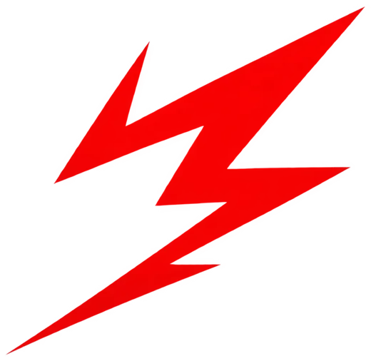
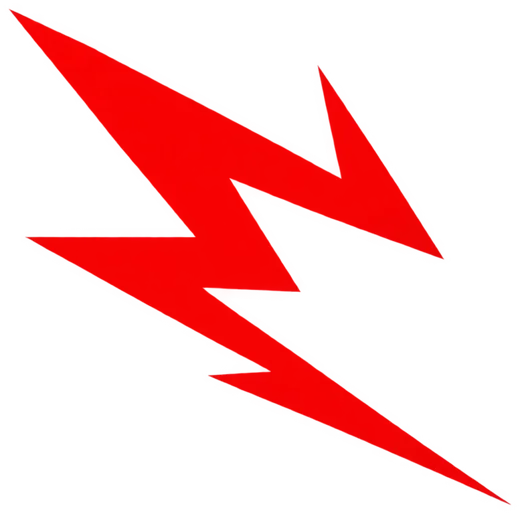

지정 색·폰트 그대로. 배경은 영상 대신 그라데이션으로 표시했습니다.
기본 하단 자막 바 (규칙 26)
원본 자막 자리 블러 → 그 위 흰 반투명 바(88%) + 검정 글씨 정중앙
자막 바 A · 2단 (규칙 84)
윗줄 흰 글씨만 · 아랫줄 큰 바 + 빨간 라벨
자막 바 B · 2단
얇은 검정 테두리 + 주황 제목 탭(바 위, 위 코너 아님)
자막 바 C · 2단
주황 모서리 괄호 · 한 편 안에서 A·B·C 섞기(규칙 85)
ゆとり教育
유토리 교육
• 여유 있는 교육
주입식 교육에서 벗어나고자 2002년 일본이 실시한 교육 제도.
교과 내용과 수업시간을 줄였지만 학력 저하로 실패한 제도로 평가받는다
용어 설명 카드 (규칙 71·76)
종이 바탕 + 가장자리 어둡게(비네트) · 한 편에 한 번
정중앙 + 뒤 반투명 · '대박' 크게 (규칙 81·83)
정중앙 요소 뒤는 반투명 어두운 바탕 · 감탄 한마디는 크게
키워드 · 레코체 (규칙 35)
흰 #FFFFFF + 외곽선 #111111 · 형광은 글자 뒤에, 밑줄처럼 내려가지 않게
VS 이미지 + 세로 불기둥 (규칙 36·77)
VS는 사용자 제공 빨강·금빛 입체 이미지 · 카드 흑백 반투명 · 빨간 알약 태그 없음
언론사 실제 로고 자리한국 PC방, 2년 만에 100배 늘었다
출처: 실제 기사 URL · 날짜
언론 (규칙 38)
실제 기사만 · 로고는 웹에서 찾아 넣음 · 형광 #C7F001 / #F2F586 번갈아 · 타이핑
이제부터
풀 파티 시작
풀파티 번개 2줄 (규칙 43)
티몬 몬소리 · #FDFDFC · 명사 #E03C3E · 양옆 빨간 번개 날개 자산
라벨 1줄 (규칙 44)
#E25254→#F26163 그라데이션 · 외곽선 #111114 · 라벨 #040506/#EFEFEF · -1.5°
붓 한마디 · 정선아리랑뿌리체 (규칙 40)
먹색 #040404 + 흰 외곽선 #FBFAF8 · 마지막 낱말 반전
그런데! 반전 (규칙 15·41)
Black Han Sans · #E21317 · 흰 테두리 없음 · 정지+흑백은 편당 2~3회만
금빛 칭찬 · 평창평화체 (규칙 45)
금빛 그라데이션 · 별·금가루
B07 거친 인쇄 + 원형 배지 (규칙 46)
링 #FFB21A 24 · 점선 #181818 5 (23/15) · 인물 사진이 들어갈 자리
B09 마모된 노랑 (규칙 47)
#FFD900→#F2C800 · 마모 #28231A · 가로 75% · 자간 -7 · 블러 금지
불꽃은 글씨 뒤 + ㅋㅋㅋ (규칙 48·56)
불꽃이 글씨를 가리지 않음 · 웃긴 순간 노란 ㅋㅋㅋ
외국인 반응 (규칙 39)
작은 머리말 + 큰 본문 · 박스 안 정중앙
문자 2통씩만 보내시면 ♥
진짜 그게 다예요?
이분들이 나가서문자 2통씩만
B03 휴대폰·말풍선 (규칙 49)
말풍선 #252A29 · 글씨 #F5F5F3 · 하트 #FF3449 · 주황 #F4A05E (손 자산은 사용자 제작 예정)